1.基本概念
1.1 前言
web开发：
- web，网页的意思，www.baidu.com
- 静态web
- html,css
- 提供给所有人看的数据始终不会发生变化！
- 动态web
- 淘宝，几乎是所有的网站；
- 提供给所有人看的数据始终会发生变化，每个人在不同的时间，不同的地点看到的信息各不相同！
- 技术栈：Servlet/JSP，ASP，PHP
1.2 web应用程序
可以提供浏览器访问的程序；
- a.html、b.html.….多个web资源，这些web资源可以被外界访问，对外界提供服务；
- 你们能访问到的任何一个页面或者资源，都存在于这个世界的某一个角落的计算机上。
- URL
- 这个统一的web资源会被放在同一个文件夹下，web应用程序>Tomcat：服务器
- 一个web应用由多部分组成（静态web，动态web)
- html,css,js
- jsp,servlet
- Java程序
- jar包
- 配置文件（Properties)
Web酸用程序编写完毕后，若想提供给外界访问；需费一个服务蔬来统一管理
1.3 静态web
- *.htm， *.html这些都是网页的后缀，如果服务器上一直存在这些东西，我们就可以直接进行读取、需要网络；
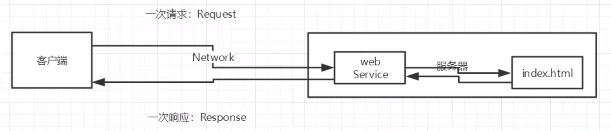
- 静态web存在的缺点
- Web页面无法动态更新，所有用户看到都是同一个页面
- 轮播图，点击特效：伪动态
- JavaScript[实际开发中，它用的最多]
- VBScript
- 它无法和数据库交互（数据无法持久化，用户无法交互）
1.4 动态web
页面会动态展示，“web页面的展示效果因人而异”
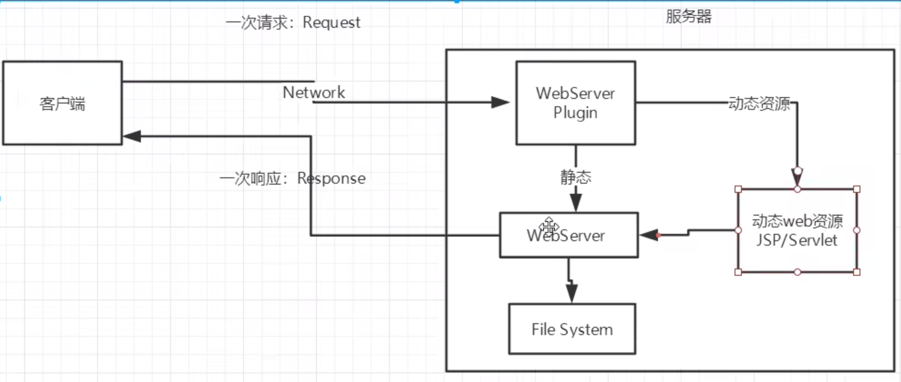
缺点
- 加入服务器的动态web资源出现了错误，我们需要重新编写我们的后台程序，重新发布；
优点
- Web页面可以动态更新，所有用户看到都不是同一个页面
- 它可以与数据库交互（数据持久化：注册，商品信息，用户信息………）
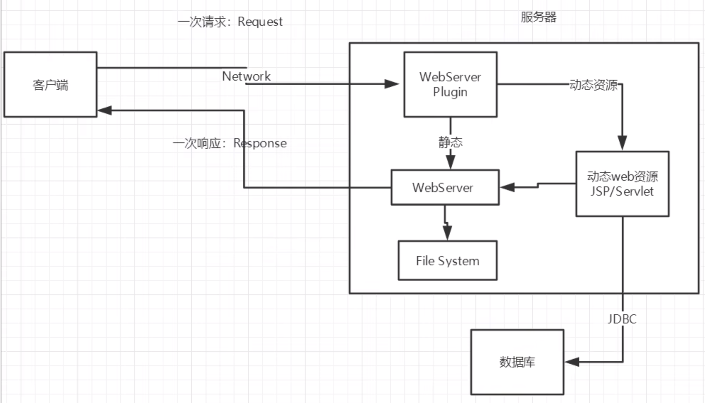
2.web服务器
2.1 技术讲解
ASP:
- 微软：国内最早流行的就是ASP；
- 在HTML中嵌入了VB的脚本，ASP+COM；
- 在ASP开发中，基本一个页面都有几干行的业务代码，页面极其换乱
- 维护成本高！
- C#
- IIS
php:
- PHP开发速度很快，功能很强大，跨平台，代码很简单（70%，WP）
- 无法承载大访问量的情况（局限性）
jSP/Servlet:
B/S；浏览和服务器C/S：客户端和服务器
- sun公司主推的B/S架构
- 基于Java语言的（所有的大公司，或者一些开源的组件，都是用Java写的）
- 可以承载三高问题带来的影响；
- 语法像ASP，ASP->JSP，加强市场强度；
2.2 web服务器
服务器是一种被动的操作，用来处理用户的一些请求和给用户一些响应信息；
lIS
微软的；ASP.,Windows中自带的
Tomcat
面向百度编程：
Tomcat是Apache 软件基金会（Apache Software Foundation)的jakarta项目中的一个核心项目，最新的Servlet 和JSP 规范总是能在Tomcat中得到体现，因为Tomcat 技术先进、性能稳定，而且免费，因而深受lava爱好者的喜爱并得到了部分软件开发商的认可，成为目前比较流行的Web应用服务器。
Tomcat 服务器是一个免费的开放源代码的Web应用服务器，属于轻量级应用服务器，在中小型系统和并发访问用户不是很多的场合下被普遍使用，是开发和调试JSP程序的首选。对于一个Java初学web的人来说，它是最佳的选择
Tomcat 实际上运行JSP页面和Serlet
3.Tomcat
3.1 安装tomcat
官网：http://tomcat.apache.org/
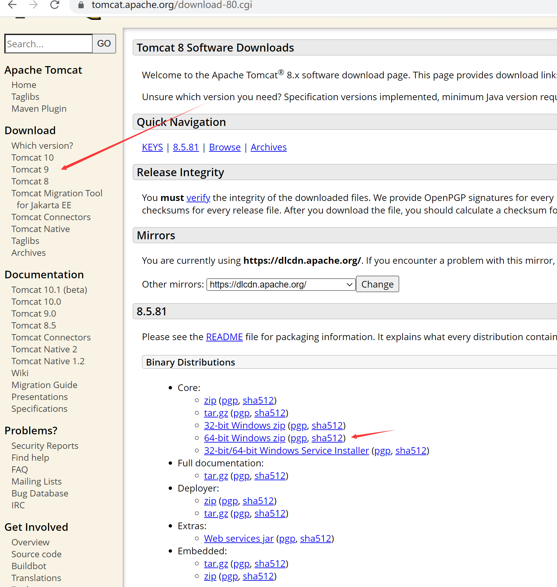
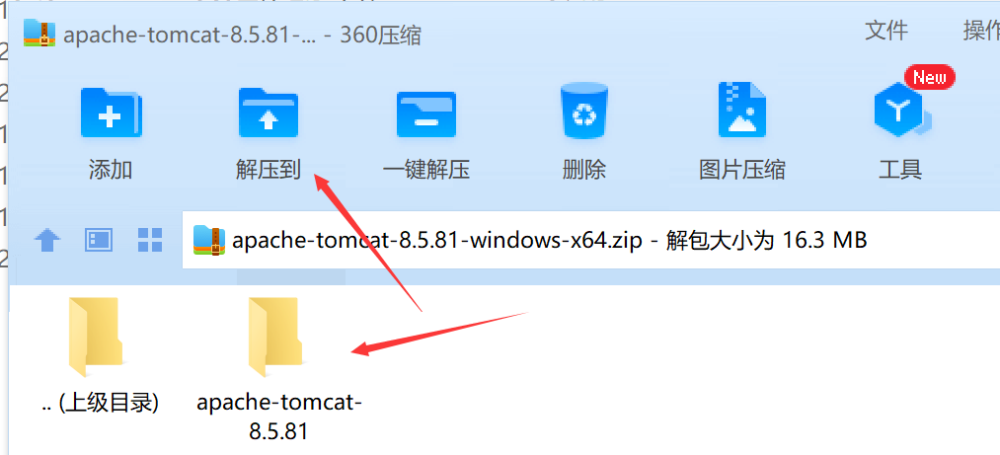
3.2 Tomcat启动和配置
文件夹作用:
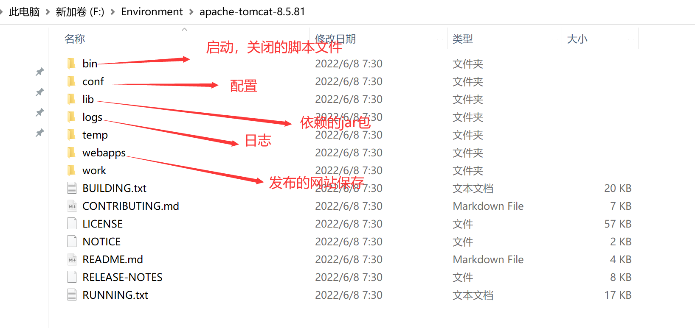
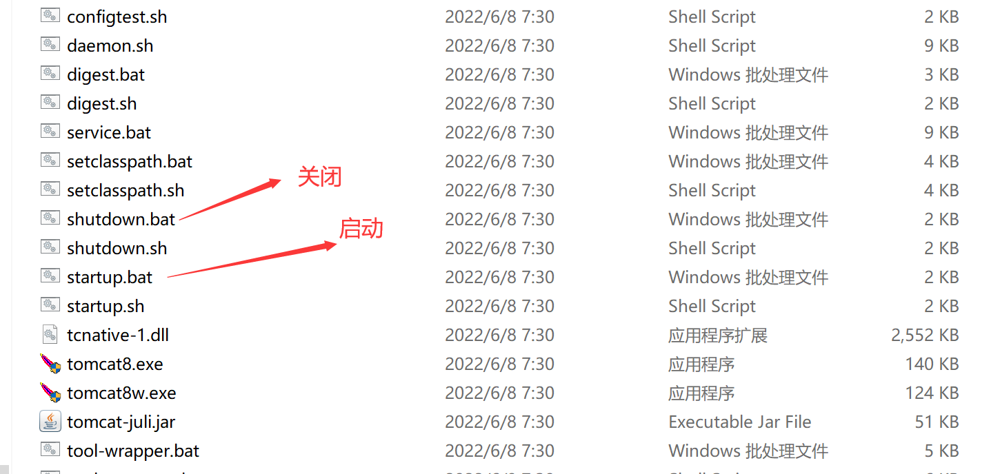
访问测试：http://localhost:8080/
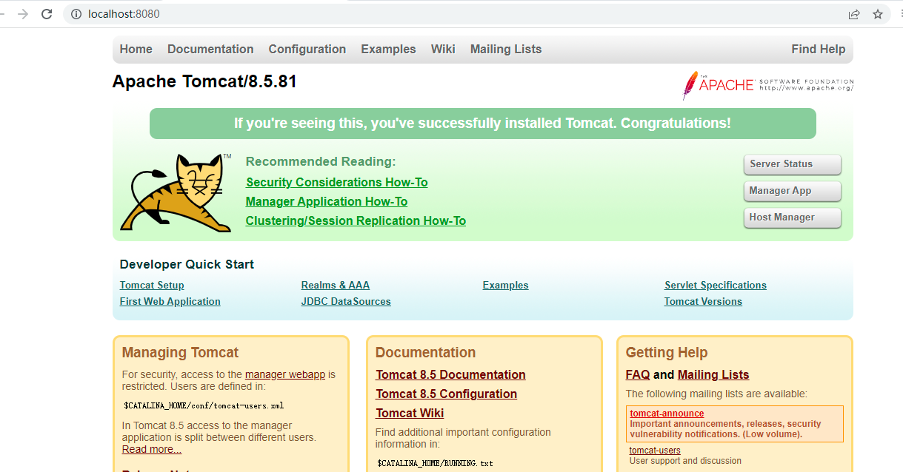
可能遇到的问题：
1
2
3
| 1.Java环境变量没有配置
2.闪退问题：需要配置兼容性
3.乱码问题：配置文件中设置
|
可以修改 conf/logging.properties 中的 java.util.logging.ConsoleHandler.encoding = GBK 解决乱码问题
3.3 配置
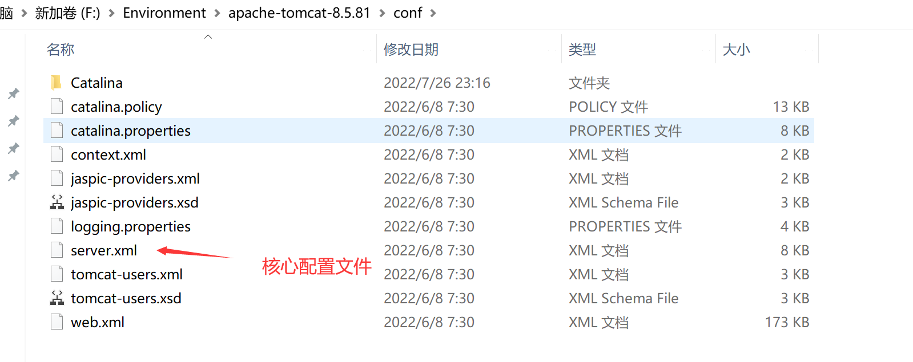
可以配置启动的端口号
1
2
3
4
5
6
7
| tomcat的默认端口号为：8080
mysql:3306
http:80
https：443
<Connector port="8081" protocol="HTTP/1.1"
connectionTimeout="20000"
redirectPort="8443" />
|
可以配置主机的名称
- 默认的主机名为：localhost->127.0.0.1
- 默认网站应用存放的位置为：webapps
1
2
| <Host name="www.yang.com" appBase="webapps"
unpackWARs="true" autoDeploy="true">
|
高难度面试题：
请你谈谈网站是如何进行访问的！
1.输入一个域名；回车
2.检查本机的C:\Windows\System32\drivers\etc\hosts配置文件下有没有这个域名映射；
- 1.有：直接返回对应的ip地址，这个地址中，有我们需要访问的web程序，可以直接访问
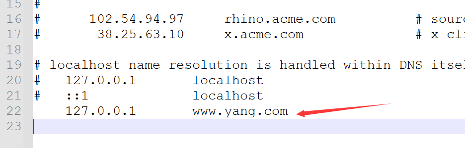
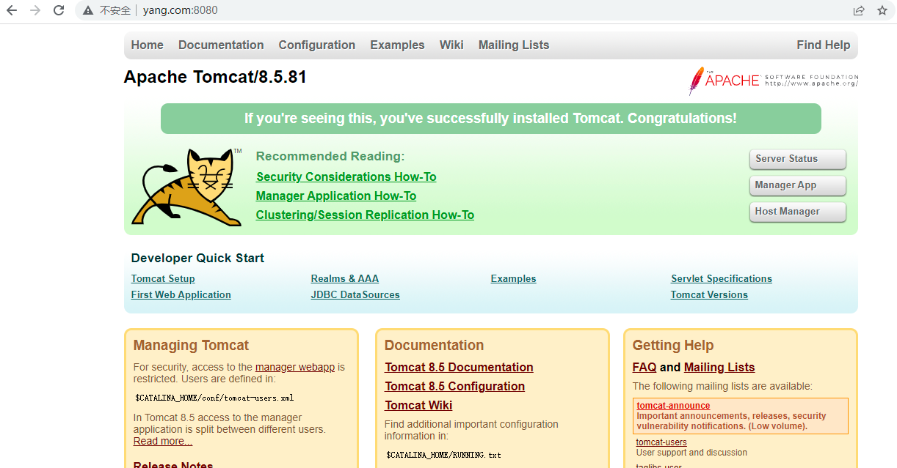
- 2.没有：去DNS服务器找，找到的话就返回，找不到就返回找不到；
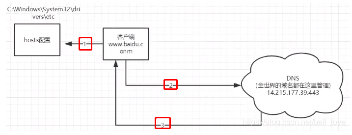
3.可以配置一下环境变量（可选性）
3.4 发布一个web网站
不会就先模仿
- 将自己写的网站，放到服务器（Tomcat)中指定的web应用的文件夹（webapps)下，就可以访问了
网站应该有的结构
1
2
3
4
5
6
7
8
9
10
11
12
13
14
| --webapps ：Tomcat服务器的web目录
-ROOT
-yangstudy ：网站的目录名
- WEB-INF
-classes : java程序
-lib：web应用所依赖的jar包
-web.xml ：网站配置文件
- index.html 默认的首页
- static
-css
-style.css
-js
-img
-.....
|

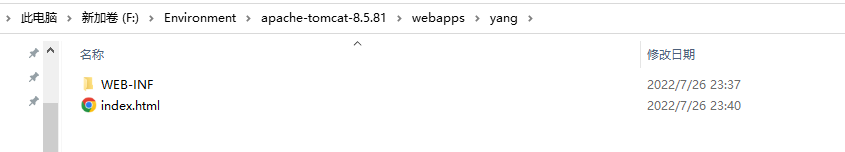
HTTP协议：面试
Maven:构建工具
Servlet入门
- HelloWorld!
- Servlet配置 ·原理
4.Http
4.1 什么是HTTP
(超文本传输协议）是一个简单的请求-响应协议的交互模式，客户端与服务器之间网页内容（超文本）的传输协议，它通常运行在TCP之上。
- 文本：html，字符串，…
- 超文本：图片，音乐，视频，定位，地图.……
- 端口:80
Https:安全的
4.2 两个时代
- http1.0
- HTTP/1.0：客户端可以与web服务器连接后，只能获得一个web资源，断开连接
- http2.0
- HTTP/1.1：客户端可以与web服务器连接后，可以获得多个web资源。
4.3 Http请求
- 客户端–发请求（Request）–服务器
- 请求行、请求头、空行、请求体
请求行
- 请求行中的请求方式：GET
- 请求方式：Get,Post,HEAD,DELETE,PUT,TRACT.…
- get：请求能够携带的参数比较少，大小有限制，会在浏览器的URL地址栏显示数据内容，不安全，但高效
- post:请求能够携带的参数没有限制，大小没有限制，不会在浏览器的URL地址栏显示数据内容，安全，但不高效
1
2
3
4
5
6
| //General
Request URL:https://www.baidu.com/ 请求地址
Request Method:GET get方法/post方法
Status Code:200 OK 状态码：200
Remote（远程） Address:14.215.177.39:443
Referrer Policy: unsafe-url
|
1
2
3
4
5
6
7
8
9
10
11
| enum ReferrerPolicy {
"",
"no-referrer",
"no-referrer-when-downgrade",
"same-origin",
"origin",
"strict-origin",
"origin-when-cross-origin",
"strict-origin-when-cross-origin",
"unsafe-url"
};
|
- 当一个用户点击当前页面中的一个链接，然后跳转到目标页面时，目标页面会收到一个信息，即用户是从哪个源链接跳转过来的
- 当发起一个http请求，请求头中的
referrer字段就说明了你是从哪个页面发起该请求的
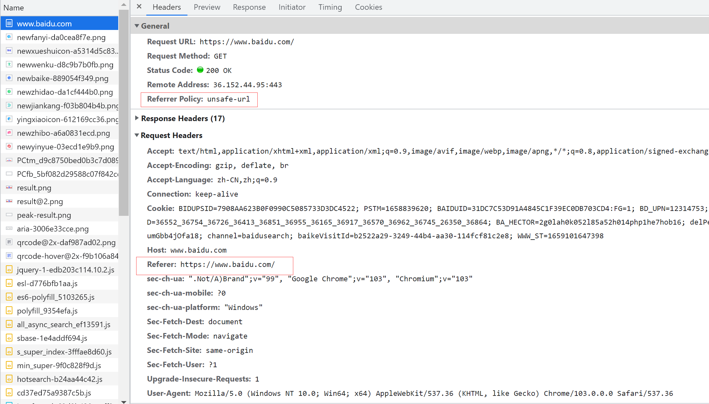
请求头
1
2
3
4
5
6
7
8
| Accept：告诉浏览器，它所支持的数据类型
Accept-Encoding：支持哪种编码格式 GBK UTF-8 GB2312 ISO8859-1
Accept-Language：告诉浏览器，它的语言环境
Cache-Control：缓存控制
Connection：告诉浏览器，请求完成是断开还是保持连接
HOST：主机..../.
Refresh：告诉客户端，多久刷新一次；
Location：让网页重新定位；
|
空行
请求体
- 请求体用来存放通过POST方式提交到服务器的数据。所以只有POST请求有请求体
4.4 Http响应
- 服务器–响应…….客户端
- 状态行、响应头、空行、响应体
状态行
1
2
|
Status Code:200 OK 状态码：200
|
响应状态码
1
2
3
4
| 200：请求响应成功200
3xx:请求重定向·重定向：你重新到我给你新位置去；
4xx:找不到资源404·资源不存在；
5xx:服务器代码错误 500 502:网关错误
|
响应头
1
2
3
4
5
6
7
8
9
10
11
12
13
14
15
16
17
18
19
20
21
22
23
24
25
26
27
28
29
30
31
32
33
34
| Cache-Control:private 缓存控制
Connection:Keep-Alive 连接
Content-Encoding:gzip 编码
Content-Type:text/html 类型
Cache-Control: no-cache
Connection: keep-alive
Content-Type: image/jpeg
Date: Sat, 30 Jul 2022 01:52:15 GMT
expires: Wed, 31 Dec 1969 23:59:59 GMT
Keep-Alive: timeout=20
Pragma: no-cache
refresh: 10000
Transfer-Encoding: chunked
Bdpagetype: 1
Bdqid: 0xb691ad55000b763b
Cache-Control: private
Connection: keep-alive
Content-Length: 13
Content-Encoding: gzip
Content-Type: text/html;charset=utf-8
Date: Fri, 29 Jul 2022 14:03:53 GMT
Keep-Alive: timeout=20
Expires: Fri, 29 Jul 2022 14:03:03 GMT
Server: BWS/1.1
Set-Cookie: BDSVRTM=0; path=/
Set-Cookie: BD_HOME=1; path=/
Set-Cookie: H_PS_PSSID=36552_36754_36726_36413_36851_36955_36165_36917_36570_36962_36745_26350_36864; path=/; domain=.baidu.com
Strict-Transport-Security: max-age=172800
Traceid: 1659103433048482253813155486567110506043
Transfer-Encoding: chunked
X-Frame-Options: sameorigin
X-Ua-Compatible: IE=Edge,chrome=1
|
空行
响应体
1
2
| PrintWriter writer = resp.getWriter();
writer.print("Hello,Servlet");
|
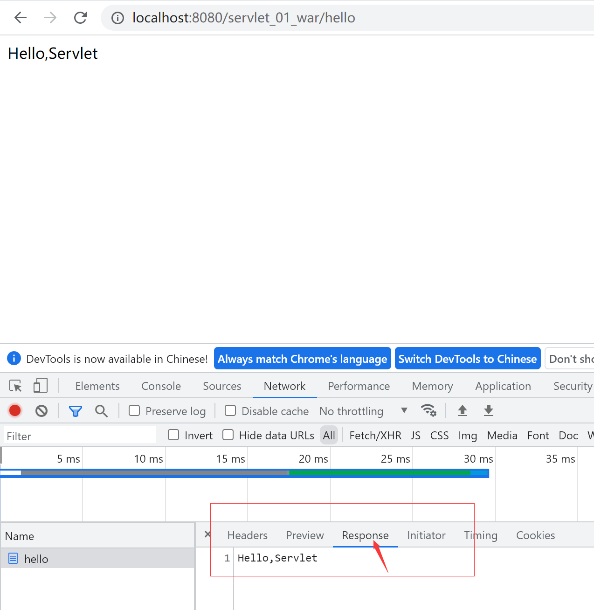
常见面试题：
当你的浏览器中地址栏输入地址并回车的一瞬间到页面能够展示回来，经历了什么？
5.Maven
5.1 Maven项目架构管理工具
我们目前用来就是方便导入jar包的！
Maven的核心思想：约定大于配置
Maven会规定好你该如何去编写我们Java代码，必须要按照这个规范来；
5.2 下载安装Maven
官网：https://maven.apache.org/docs/history.html
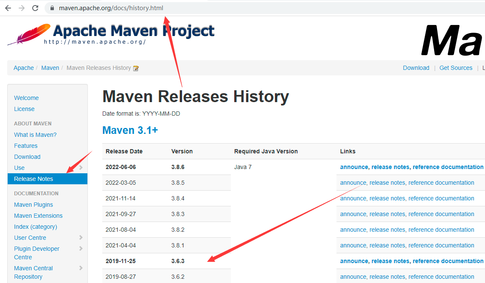
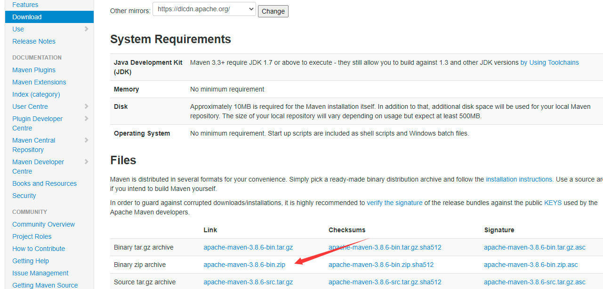
下载完成后，解压即可；
5.3 配置环境变量
在我们的系统环境变量中配置如下配置：
- M2_HOME maven目录下的bin目录
- MAVEN_HOME maven的目录
- 在系统的path中配置%MAVEN_HOME%\bin
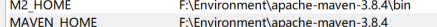
测试Maven是否安装成功，保证必须配置完毕！
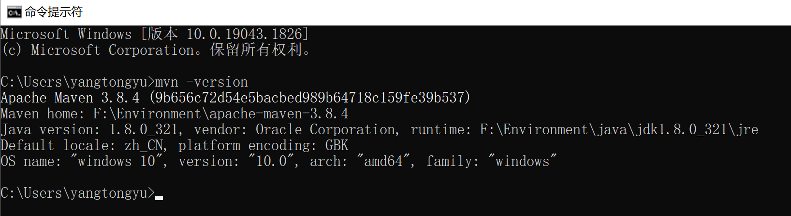
5.4 阿里云镜像
- 镜像：mirrors
- 作用：加速我们的下载
- 国内建议使用阿里云的镜像
1
2
3
4
5
6
| <mirror>
<id>nexus-aliyun</id>
<mirrorOf>*,!jeecg,!jeecg-snapshots</mirrorOf>
<name>Nexus aliyun</name>
<url>http://maven.aliyun.com/nexus/content/groups/public</url>
</mirror>
|
F:Enmvironment\apache-maven-3.8.4\conf\settings.xml
5.5 本地仓库
在本地的仓库，远程仓库； 建立一个本地仓库：localRepository
1
| <localRepository>F:\Environment\apache-maven-3.8.4\maven-repo</localRepository>
|
5.6 IDEA配置maven
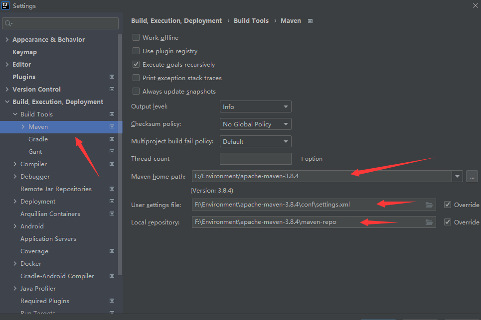
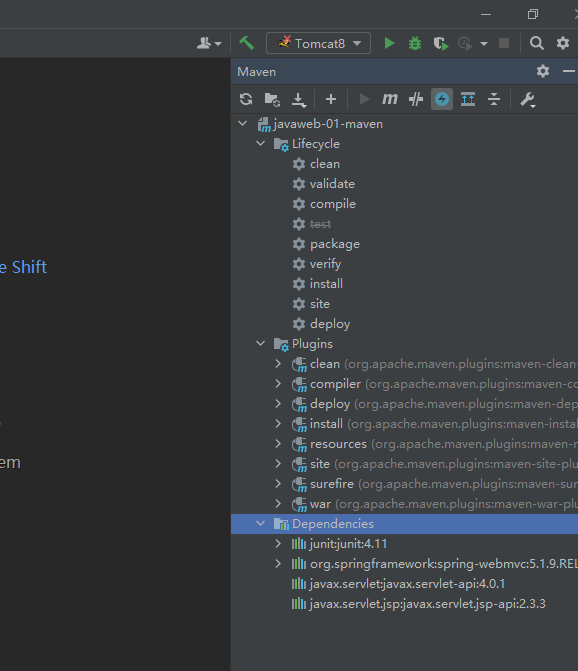

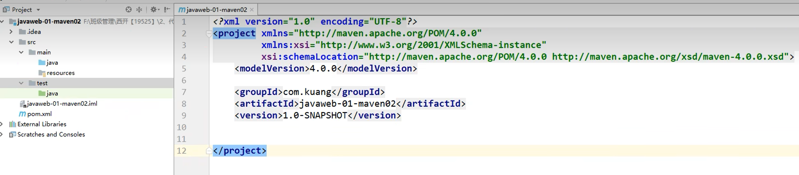
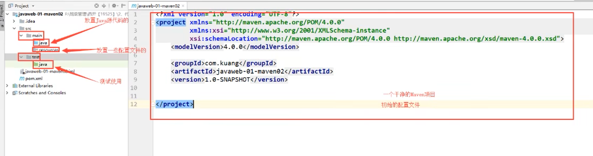
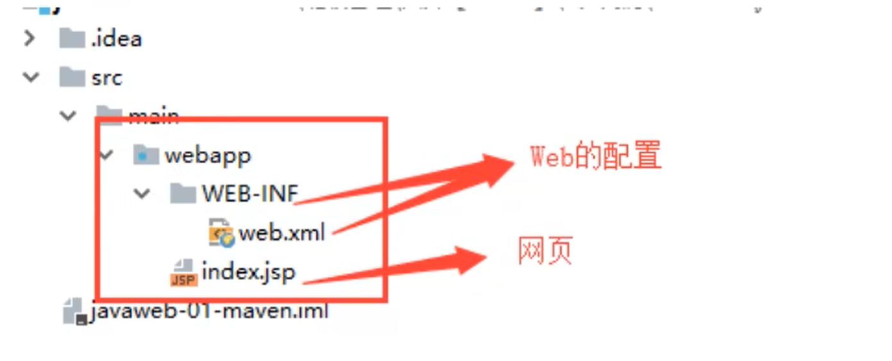
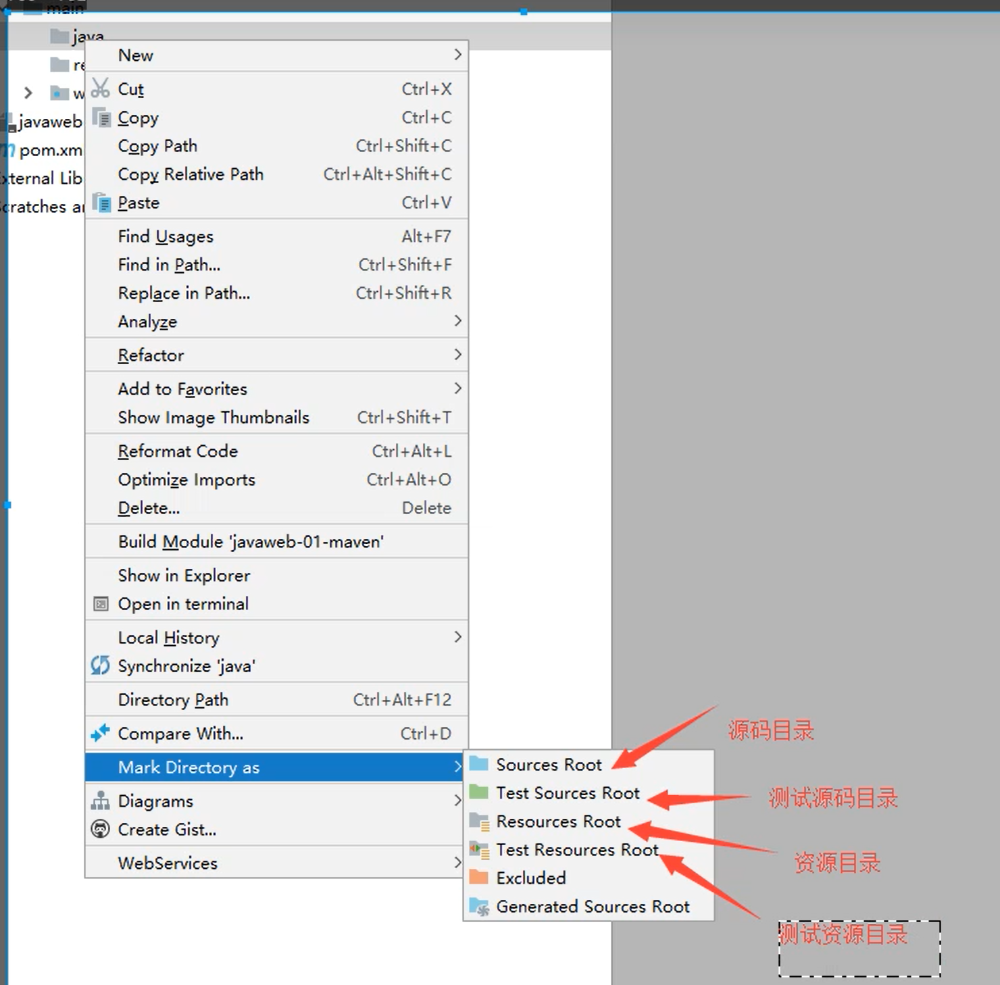
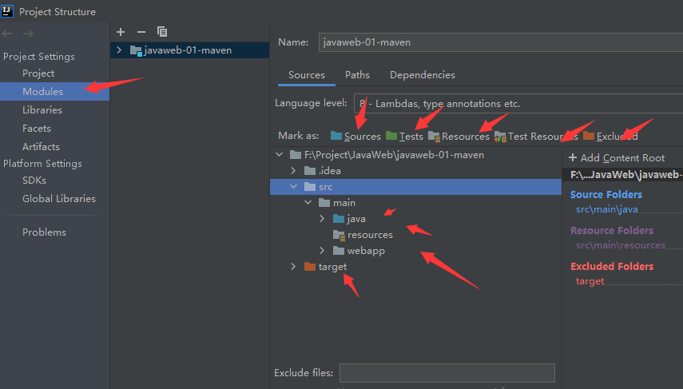
5.7 IDEA配置tomcat
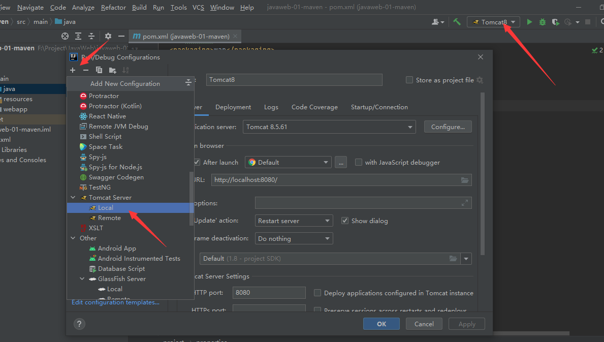
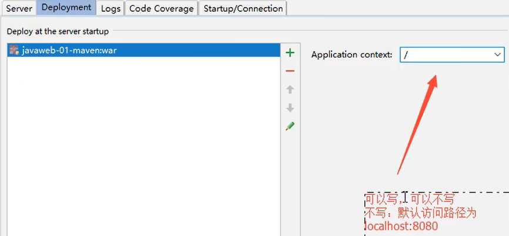
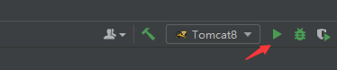
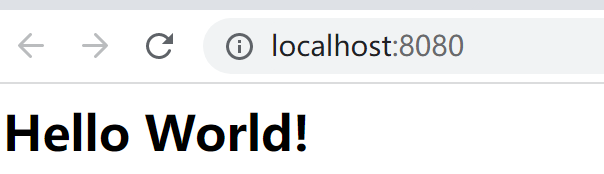
5.8 pom.xml
1
2
3
4
5
6
7
8
9
10
11
12
13
14
15
16
17
18
19
20
21
22
23
24
25
26
27
28
29
30
31
32
33
34
35
36
37
38
39
40
41
42
43
44
45
46
47
48
49
50
51
52
53
54
55
56
57
58
59
60
61
62
63
64
65
66
67
68
69
70
71
72
73
74
75
76
77
78
79
80
81
82
83
84
85
86
87
88
| <?xml version="1.0" encoding="UTF-8"?>
<project xmlns="http://maven.apache.org/POM/4.0.0" xmlns:xsi="http://www.w3.org/2001/XMLSchema-instance"
xsi:schemaLocation="http://maven.apache.org/POM/4.0.0 http://maven.apache.org/xsd/maven-4.0.0.xsd">
<modelVersion>4.0.0</modelVersion>
<groupId>com.yang</groupId>
<artifactId>javaweb-01-maven</artifactId>
<version>1.0-SNAPSHOT</version>
<packaging>war</packaging>
<properties>
<project.build.sourceEncoding>UTF-8</project.build.sourceEncoding>
<maven.compiler.source>1.8</maven.compiler.source>
<maven.compiler.target>1.8</maven.compiler.target>
</properties>
<dependencies>
<dependency>
<groupId>junit</groupId>
<artifactId>junit</artifactId>
<version>4.11</version>
</dependency>
<dependency>
<groupId>org.springframework</groupId>
<artifactId>spring-webmvc</artifactId>
<version>5.1.9.RELEASE</version>
</dependency>
<dependency>
<groupId>javax.servlet</groupId>
<artifactId>javax.servlet-api</artifactId>
<version>4.0.1</version>
</dependency>
<dependency>
<groupId>javax.servlet.jsp</groupId>
<artifactId>javax.servlet.jsp-api</artifactId>
<version>2.3.3</version>
</dependency>
</dependencies>
<build>
<finalName>javaweb-01-maven</finalName>
<pluginManagement>
<plugins>
<plugin>
<artifactId>maven-clean-plugin</artifactId>
<version>3.1.0</version>
</plugin>
<plugin>
<artifactId>maven-resources-plugin</artifactId>
<version>3.0.2</version>
</plugin>
<plugin>
<artifactId>maven-compiler-plugin</artifactId>
<version>3.8.0</version>
</plugin>
<plugin>
<artifactId>maven-surefire-plugin</artifactId>
<version>2.22.1</version>
</plugin>
<plugin>
<artifactId>maven-war-plugin</artifactId>
<version>3.2.2</version>
</plugin>
<plugin>
<artifactId>maven-install-plugin</artifactId>
<version>2.5.2</version>
</plugin>
<plugin>
<artifactId>maven-deploy-plugin</artifactId>
<version>2.8.2</version>
</plugin>
</plugins>
</pluginManagement>
</build>
</project>
|
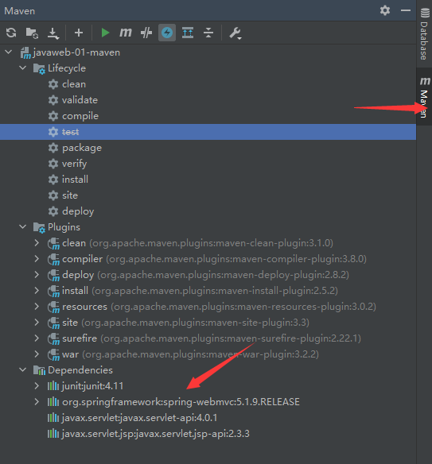
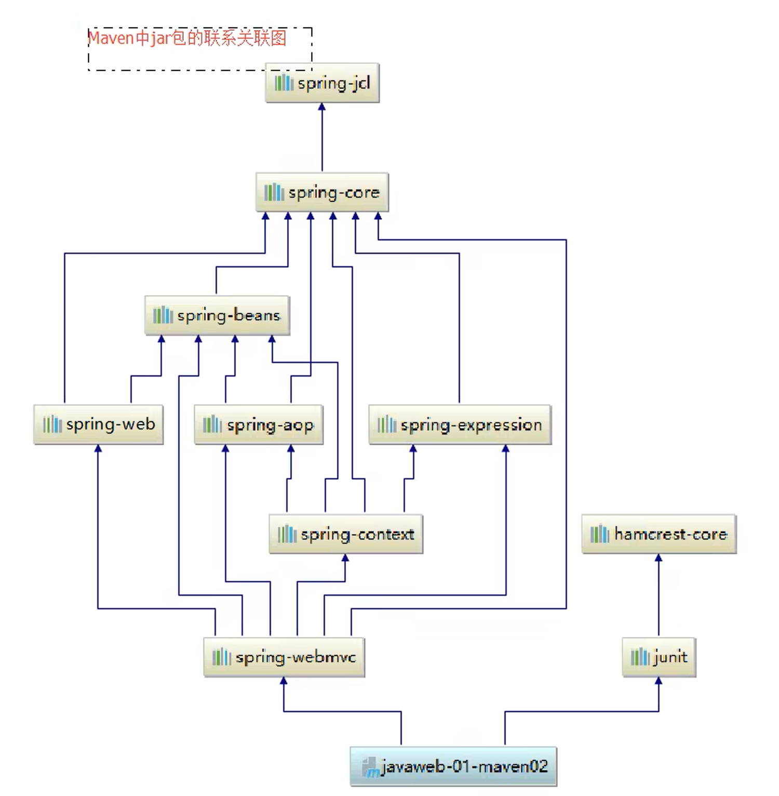